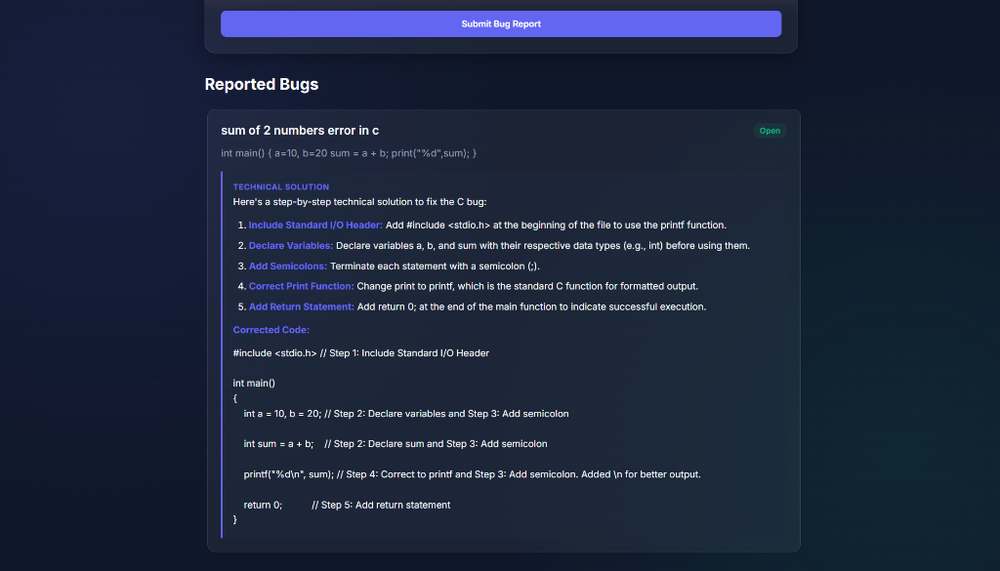
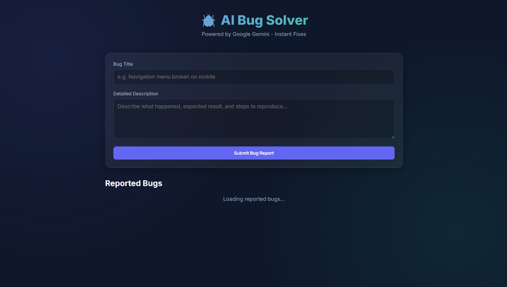
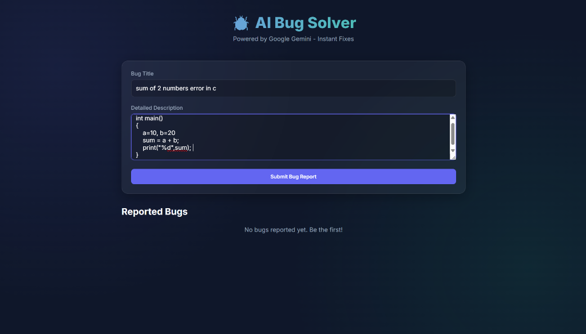
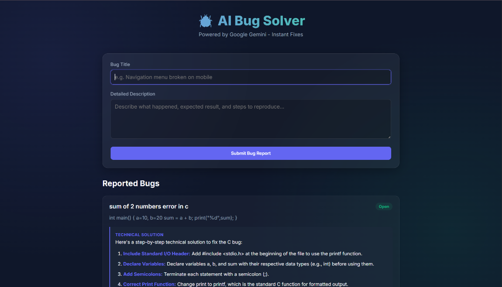

AI Bug Solver
AI-Powered Bug Diagnosis & Code Debugging Assistant powered by Google Gemini API

Executive Summary
AI Bug Solver is a lightweight web application designed to help developers quickly understand and resolve code errors. When developers paste cryptic error logs, stack traces, and snippets of broken code, the application coordinates with the Google Gemini API to pinpoint root causes, explain the underlying logic failure, and provide clean, annotated code corrections.
Built as a responsive client-side application, it focuses on fast feedback loops, clear Markdown rendering, and structured explanations that educate developers on why an error occurred rather than just providing an unexplained snippet.
The Problem
Junior engineers and students spend countless hours sifting through StackOverflow threads and outdated documentation trying to decipher cryptic compiler warnings and runtime exceptions. Generic search results frequently fail to address the specific context of their custom code.
The Engineering Solution
AI Bug Solver provides an isolated troubleshooting environment where developers provide their buggy snippet and error context together. The Gemini API analyzes the AST structure and logic flow, returning a prioritized breakdown of fixes with inline code commentary.
Key Implemented Features
Context-Aware Bug Submission
Inputs for error messages, stack trace logs, and code snippets allowing multi-faceted diagnostic context.
Gemini LLM Diagnostics
Structured prompting coordinates with Google Gemini to identify logic bugs, missing dependencies, and syntax flaws.
Annotated Code Corrections
Generates clean, drop-in replacement code with clear comments highlighting exactly what was changed and why.
Sequential Fix Breakdown
Provides a step-by-step remediation guide explaining underlying concepts to reinforce software engineering principles.
Multi-Language Support
Engineered to inspect code across Python, JavaScript, C, C++, and Java without requiring language-specific compilers.
Session History Logs
Maintains a local log of previous debugging sessions so developers can revisit earlier solutions during work sessions.
Technology Stack
System Screenshots
Direct interface captures from the deployed application. Click any screenshot to enlarge.

Main Bug Submission Portal
Primary input form accepting error title, programming language tags, and multi-line code blocks.

Bug Report Form in Action
Demonstrating input with sample code containing common compilation faults and syntax errors.
AI Diagnostic Output
Formatted response showing numbered root-cause explanations and a copyable, corrected code block.

Session History Log
Persistent list of diagnosed bugs enabling developers to review past inquiries and solutions.
Challenges & Solutions
Unstructured LLM Output Formatting
Raw text returned by language models can vary wildly in structure, often mixing markdown headings, unescaped backticks, and inconsistent prose.
System Prompt Structuring & Regex Parsing
Defined a strict system instruction prompting the model to reply in structured JSON/delimited blocks, then used client-side regex parsing to format clean code blocks and lists.
Asynchronous Request Latency & User Feedback
AI generation can take several seconds. Without proper status feedback, users frequently believe the application has stalled or re-submit queries.
Defensive UI States & Loading Spinners
Added instant button disablement upon form submission, an animated progress indicator, and safe timeout handling to inform users of diagnostic progress.
Test the Live Application
Try diagnosing a sample code snippet or review the open-source repository on GitHub.